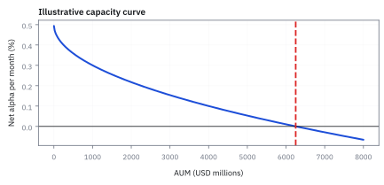
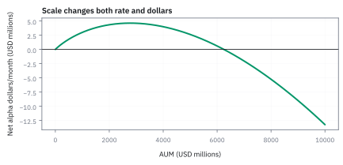
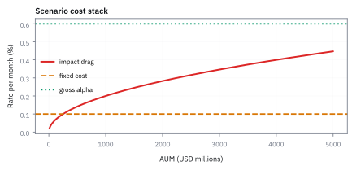
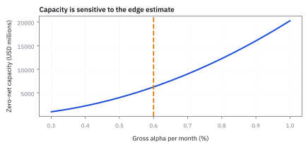

18.7 Strategy Capacity
AUM โตได้จน impact กิน alpha ที่เคยเห็นใน backtest
สูตรส่งพัสดุที่ใช้รถหนึ่งคันทำกำไรดี แต่ถ้าเพิ่มเป็นรถยี่สิบคัน ทุกคันต้องแย่งถนนเส้นเดิม กำไรต่อคันจะเท่าเดิมไหม?
คำตอบคือ: เมื่อ assets under management (AUM)—เงินทั้งหมดที่กลยุทธ์ดูแล—โตขึ้น คำสั่งซื้อขายใหญ่ขึ้นและกระทบราคา เราจึงหาขนาดที่กำไรส่วนเกินหลังต้นทุนเหลือศูนย์ ซึ่งเรียกว่า capacity.
จำภาพนี้ไว้: เงินใหม่ไม่ได้ทำให้ signal ฉลาดขึ้น มันแค่ทำให้ตลาดเริ่มอ่านลายมือเรา.
ศัพท์ที่ใช้ในหัวข้อนี้
- strategy capacity
- ขนาด AUM ที่ strategy ยังสร้าง expected net return หลัง trading cost และข้อจำกัด liquidity ใช้ตั้ง limit การรับเงินใหม่หรือแบ่ง capital ไปหลาย sleeves
- Assets Under Management (AUM)
- มูลค่าเงินลงทุนที่ strategy ดูแล ใช้เป็นฐานแปลง return, turnover และ trading size เป็น USD
- alpha
- ผลตอบแทนส่วนที่ model คาดหวังเหนือ benchmark หรือ factor exposure ที่กำหนด ใช้เป็น gross edge ก่อนหัก execution cost และ fees
- turnover
- สัดส่วนของ portfolio ที่ซื้อขายใน horizon หนึ่ง ใช้แปลง per-trade cost ให้เป็น drag ต่อ AUM
สัญลักษณ์ที่ใช้ในหัวข้อนี้
| สัญลักษณ์ | ความหมาย | หน่วย |
|---|---|---|
| $A$ | AUM | USD |
| $\alpha_g$ | gross alpha ต่อ horizon | fraction of AUM |
| $c_0$ | fixed trading-cost rate | fraction of AUM |
| $k$ | impact coefficient ใน capacity scenario | fraction per square-root USD |
| $\alpha_n(A)$ | net alpha หลัง cost | fraction of AUM |
ที่มาที่ไป: คำถามที่กองทุนที่ดีที่สุดต้องตอบ
คำถามคือรับเงินเพิ่มได้อีกเท่าไรก่อนที่ผลตอบแทนจะเจือจางจนไม่คุ้ม
คำถามนี้ขัดกับแรงจูงใจตามธรรมชาติ เพราะค่าธรรมเนียมคิดตามขนาดเงิน ผู้จัดการจึงมีแรงจูงใจให้รับเงินเพิ่มเสมอ แม้จะรู้ว่าผลตอบแทนจะแย่ลง
กองทุนที่มีชื่อเสียงที่สุดหลายแห่งเลือกปิดรับเงินใหม่เมื่อถึงจุดหนึ่ง ซึ่งเป็นการตัดสินใจที่ยาก แต่เป็นสิ่งที่รักษาผลตอบแทนของผู้ลงทุนเดิมไว้ได้
หัวข้อนี้ทำให้การตัดสินใจนั้นเป็นตัวเลข โดยเขียนว่าต้นทุนโตตามขนาดเงินอย่างไร แล้วแก้ย้อนหาขนาดที่ทำให้ผลตอบแทนสุทธิเหลือพอดีตามเกณฑ์
capacity คือสมการของ edge ลบ footprint
ใช้ scenario transparent: gross alpha 0.60% ต่อเดือน, fixed costs 0.10% และ impact drag $0.02\%\sqrt{A/\$10M}$ ต่อเดือน จุด capacity คือ net alpha ไม่มี net alpha เงินใหม่ไม่ได้ทำให้ signal ฉลาดขึ้น มันแค่ทำให้ order ใหญ่จน market เริ่มอ่านลายมือเรา
ขั้นที่ 1 — นิยามของบัญชี alpha สุทธิ พร้อมรูปของต้นทุนที่โตตามขนาด
บรรทัดนี้เป็น นิยาม ของบัญชีที่เราจะใช้ ไม่ใช่ผลที่พิสูจน์ ก้อนแรกคือผลตอบแทนก่อนต้นทุนที่เห็นใน backtest ซึ่งไม่มีใครได้จริง ก้อนที่สองคือต้นทุนคงที่ต่อหน่วยที่ไม่ขึ้นกับขนาด เช่นค่าธรรมเนียม ก้อนที่สามคือต้นทุนจากการดันราคาตัวเอง ซึ่งยืมรูปรากที่สองมาจากหัวข้อ 18.5 และต้องส่วนด้วยขนาดอ้างอิงก่อน เพื่อให้ของใต้รากไม่มีหน่วย ผลรวมคือผลตอบแทนที่เหลือจริง และมันลดลงเมื่อเงินโต ซึ่งเป็นทั้งหมดที่หัวข้อนี้ต้องการแสดง
ทุก term เป็น return fraction ต่อเดือน;
square root input ไม่มีหน่วยเพราะ AUM ถูกส่วนด้วย $10M$ USD reference size
ขั้นที่ 2 — หา zero-net capacity
capacity คือขนาดเงินที่ทำให้ alpha สุทธิเหลือศูนย์พอดี แก้ย้อนกลับทีละขั้น
แก้ย้อนกลับได้ 625 แล้วคูณกลับเป็น 6.25 พันล้านดอลลาร์ นี่คือขนาดที่ alpha หายไปหมดพอดีจากการเทรดของตัวเอง เกินกว่านี้กลยุทธ์เดิมก็ไม่เหลืออะไรให้เก็บ และขนาดที่ควรใช้จริงต้องเล็กกว่านี้
alpha ดิบ 0.6% หักต้นทุนคงที่ 0.1% เหลือ 0.5% ให้ต้นทุนที่โตตามขนาดกิน
เพราะต้นทุนโตตามราก การยกกำลังสองในบรรทัดรองสุดท้ายจึงทำให้ capacity ใหญ่ถึงหกพันล้าน USD ไม่ใช่หลักร้อยล้าน
ขั้นที่ 3 — แปลงเป็น AUM
แก้ย้อนกลับหาว่าเงินเท่าไรที่ทำให้ alpha สุทธิเหลือพอดีตามเกณฑ์ที่ตั้งไว้
scenario capacity เท่ากับ \$6.25 billion USD;
เป็นผลของ parameters ที่สมมติ ไม่ใช่ claim ว่ากลยุทธ์จริงใดรับเงินได้เท่านี้
ขั้นที่ 4 — ลองด้วยมือ: AUM สี่ระดับ กับจุดที่เงิน alpha สูงสุด
capacity คือจุดที่ net alpha เป็นศูนย์ แต่คำถามที่ผู้ลงทุนถามคือ ‘เงิน’ กำไร ลองไล่ AUM ทีละระดับแล้วดูว่าสองอย่างนี้สูงสุดคนละที่
ต่อเดือน: ที่ 10 ล้าน กำไร 48,000 ที่ 100 ล้าน 437,000 ที่พันล้าน 3 ล้าน แล้วที่ 6.25 พันล้านเป็นศูนย์ อัตราต่อหน่วยเงินลดลงตลอด แต่ *เงิน* กำไรยังโตอยู่นานเพราะฐานใหญ่ขึ้น
จุดที่เงินกำไรสูงสุดอยู่ที่ราว 2.8 พันล้าน (net เหลือ 0.17%) ไม่ใช่ที่ capacity 6.25 พันล้าน ถ้าค่าธรรมเนียมคิดจากกำไร ผู้จัดการควรหยุดที่ 2.8 ถ้าค่าธรรมเนียมคิดจาก AUM แรงจูงใจคือไปให้ถึง 6.25 ทั้งที่ผู้ลงทุนไม่ได้อะไรเลย นี่คือความขัดแย้งที่หัวข้อ 15.7 พูดถึงในรูปตัวเลข
การหาจุดสูงสุด: ให้ $x=\sqrt{A/10\text{M}}$ เงินกำไรคือ $10\text{M}\,x^2(0.005-0.0002x)$ derivative เป็นศูนย์ที่ $0.01x=0.0006x^2$ คือ $x=16.7$
ขั้นที่ 5 — กฎสี่ในเก้า (4/9 Rule): การพิสูจน์จุดทำเงินสูงสุดก่อน Alpha ถูกกลืนกิน
กฎ 4/9 เป็นหลักเกณฑ์สำคัญในการบริหารกองทุน: การเพิ่มขนาด AUM จนแตะเพดาน zero-net capacity จะทำลายผลกำไรส่วนใหญ่ไปกับ market impact จุดที่สร้างเม็ดเงินดอลลาร์สูงสุดจึงอยู่ที่ราว 44% ของเพดานเสมอ
จำนวนเงินกำไรที่เป็นดอลลาร์คือผลคูณระหว่าง AUM กับ net alpha ต่อดอลลาร์ แม้ว่า net alpha จะลดลงเรื่อย ๆ แต่ในช่วงแรกเงินต้นที่เพิ่มขึ้นจะชนะค่า slippage
เพื่อหาจุดสูงสุด เราเปลี่ยนตัวแปรให้ $x = \sqrt{A}$ แล้วหา derivative ของกำไรเทียบกับ $x$ จะได้ว่าจุดวกกลับเกิดขึ้นเมื่อ $x$ มีค่าสองในสามของจุดที่ alpha กลายเป็นศูนย์
เมื่อยกกำลังสองกลับไปเป็นเงิน AUM อัตราส่วน $2/3$ จะกลายเป็น $4/9$ หรือประมาณ 44.4% ของความจุเต็มเพดานเสมอ นี่คือกฎสากลของทุกกลยุทธ์ที่มีต้นทุน impact แบบ square-root
สำหรับพอร์ตตัวอย่าง จุดทำกำไรสูงสุดไม่ได้อยู่ที่ 6,250 ล้านดอลลาร์ แต่อยู่ที่ 2,778 ล้านดอลลาร์ โดยสร้างกำไรสุทธิสูงสุดได้เดือนละ 4.63 ล้านดอลลาร์ หากรับเงินเกินจุดนี้ กำไรที่เป็นเม็ดเงินรวมจะลดลง
ขั้นที่ 6 — Mean-Variance-Liquidity Frontier: การปรับน้ำหนักพอร์ตเมื่อ AUM ขยายตัว
เมื่อ AUM ขยายตัว การปรับพอร์ตแบบ Mean-Variance-Liquidity จะตัดลดตำแหน่งในสินทรัพย์สภาพคล่องต่ำโดยอัตโนมัติ เพื่อป้องกันไม่ให้ต้นทุน slippage กัดกินผลตอบแทนของทั้งพอร์ต
การบริหาร capacity ไม่ใช่แค่การคุมขนาดเงินรวม แต่คือการจัดพอร์ตแบบ mean-variance-liquidity frontier โดยเพิ่มบทลงโทษของต้นทุนการเทรดเข้าไปในสมการเป้าหมาย
เมื่อกองทุนมีเงิน AUM ใหญ่ขึ้น ขนาดคำสั่งซื้อขายจริงในแต่ละสินทรัพย์จะพุ่งสูงขึ้นอย่างรวดเร็ว ส่งผลให้บทลงโทษต้นทุนเติบโตตามขนาดเม็ดเงินยกกำลัง $\beta$
แบบจำลองจะบีบให้พอร์ตต้องลดน้ำหนักในหุ้นที่มี alpha สูงแต่สภาพคล่องแห้งเหือด เช่น หุ้นตัวที่สามที่มีวอลุ่มเพียง 0.01 หน่วย น้ำหนักจะถูกหั่นจาก 15.3% ลงเหลือเพียง 0.16%
เม็ดเงินส่วนเกินจะถูกผลักไปเข้าหุ้นกลุ่มขนาดใหญ่ที่มีวอลุ่มเทรดมหาศาล ทำให้ผลตอบแทนรวมของพอร์ตค่อย ๆ เบนเข้าหาผลตอบแทนของดัชนีตลาดในที่สุด
ที่มาที่ไป: ปริศนาของ Medallion Fund และการปิดรับเงินของกองทุนควอนต์
หนึ่งในตัวอย่างคลาสสิกที่สุดของ capacity ในโลกการเงินจริง คือกองทุน Medallion ของบริษัท Renaissance Technologies ซึ่งก่อตั้งโดย Jim Simons
ตั้งแต่ช่วงทศวรรษ 2000 กองทุน Medallion ได้ตัดสินใจปิดไม่รับเงินลงทุนจากภายนอกอย่างถาวร และจำกัดขนาดเงินลงทุนไว้ที่ประมาณ 10,000 ล้านดอลลาร์ โดยบังคับจ่ายผลกำไรคืนให้พนักงานและผู้ถือหุ้นทุกปี เพราะทีมวิจัยพบว่าหากปล่อยให้ AUM โตเกินกว่าจุด optimal ขนาดคำสั่งที่ใหญ่ขึ้นจะสร้าง market impact จนทำลาย Sharpe ratio ระดับตำนานของพวกเขา
การตัดสินใจนี้ชี้ให้เห็นความขัดแย้งของธุรกิจกองทุน: ผู้จัดการที่คิดค่าธรรมเนียมตามขนาดทรัพย์สิน (management fee) มักอยากระดมทุนให้ใหญ่ที่สุดเท่าที่จะทำได้ แต่กองทุนสาย quant คุณภาพสูงที่มุ่งเน้นส่วนแบ่งกำไร (performance fee) จะหยุดรับเงินที่จุดทำเงินสูงสุดทันที
แล้วเอาไปใช้ทำอะไรได้จริงบ้าง
การรู้ว่ากลยุทธ์รับเงินได้เท่าไร เป็นตัวเลขที่กำหนดว่าธุรกิจนี้ใหญ่ได้แค่ไหน
ใช้ตอบผู้ลงทุนว่ากองทุนจะรับเงินเพิ่มได้อีกเท่าไรก่อนผลตอบแทนจะเจือจาง
ใช้ตัดสินใจปิดรับเงินใหม่ ซึ่งกองทุนที่ดีที่สุดทำเมื่อถึงขีดจำกัด
ใช้วางแผนว่าจะต้องหากลยุทธ์ใหม่เมื่อไร เพราะกลยุทธ์เดิมจะเต็มความจุ
Figure 18.7a — net alpha ลดตาม AUM

เส้นนี้ใช้ capacity scenario ที่ประกาศไว้ในโจทย์; net alpha ตัดศูนย์ที่ \$6.25B และทำให้เห็นว่าการ scale ไม่ใช่การคูณ P and L แบบเส้นตรง
Figure 18.7b — alpha dollars ไม่จำเป็นต้องโตตลอด

แม้ net alpha rate ลดลง alpha dollars อาจเพิ่มช่วงแรกแล้วลดเมื่อ AUM ใหญ่เกิน; รูปนี้ใช้ parameters เดิมและไม่รวม management fee หรือ redemptions
Figure 18.7c — cost components ตาม scale

fixed cost rate คงที่ใน scenario แต่ impact drag โตตามรากที่สองของ AUM จึงค่อย ๆ กิน gross alpha; calibration จริงต้องใช้ fills และ volume ที่ relevant
Figure 18.7d — sensitivity ของ capacity ต่อ gross alpha

capacity เปลี่ยนมากเมื่อ gross alpha เปลี่ยนเพียงเล็กน้อย เพราะ zero-net condition ยกส่วนต่างหลัง fixed cost ขึ้นกำลังสอง; เส้นนี้เป็น sensitivity ของ scenario เดิม ไม่ใช่ confidence interval
Worked Example — 50 names ไม่ได้แปลว่าสภาพคล่องกระจายเท่ากัน
ถาม: strategy ถือหุ้น 50 names แต่ order ส่วนใหญ่กระจุกอยู่ในไม่กี่ตัวที่ volume ต่ำ capacity ควรอิง average volume ของหุ้นทั้งชุดหรือไม่?
ของที่มี: แต่ละ name มี order size, volume และ participation cap ต่างกัน ตัวที่แตะข้อจำกัดก่อนคือ bottleneck
คิดทีละงาน: คำนวณขนาดที่ส่งได้ของแต่ละ name จาก volume × participation cap แล้วหา name ที่รองรับ AUM ได้น้อยที่สุด คำตอบคือ capacity ถูกกำหนดโดยคอขวด ไม่ใช่ค่าเฉลี่ยของ universe
เช็กใน 10 วินาที: ต่อให้ 49 names รับ order เพิ่มได้ ถ้า name ที่ 50 เต็มเพดานและ signal บังคับให้ถือมัน เงินใหม่ก็ยังลงตาม portfolio เดิมไม่ได้
เอาไปใช้จริง: รายงาน capacity แยกตาม sleeve, holding period และ stress volume แล้วทดสอบ net alpha หลังข้อจำกัดเหล่านี้
กับดัก: extrapolate backtest return ด้วย AUM ใหม่
backtest มักใช้ price ที่ไม่ตอบสนองต่อ order ของเรา, fills ที่ midpoint และ universe ก่อน delist เมื่อ AUM เพิ่ม crowding, borrow cost, market impact และ alpha decay อาจเคลื่อนพร้อมกัน การประกาศ capacity ต้องมี uncertainty range ไม่ใช่จุดทศนิยมหลอกตา
ข้อจำกัด: วิธีนี้สมมติอะไร และของจริงเป็นอย่างไร
| เรื่อง | วิธีนี้สมมติว่า | ของจริงเป็นอย่างไร | ผลที่ตามมาเวลาใช้งาน |
|---|---|---|---|
| รูปของต้นทุน | ต้นทุนโตตามรากของขนาด | เป็นค่าประมาณจากข้อมูลในอดีต | ขีดจำกัดที่คำนวณได้อาจสูงเกินจริงหลายเท่า |
| ผู้เล่นรายอื่น | เราเป็นคนเดียวที่ใช้กลยุทธ์นี้ | มีคนอื่นใช้กลยุทธ์คล้ายกัน | ความจุที่แท้จริงคือความจุร่วมของทุกคน ไม่ใช่ของเราคนเดียว |
| ความคงที่ | สัญญาณยังแรงเท่าเดิม | มันจางลงพร้อมกับที่เงินเพิ่ม | สองผลนี้ซ้อนกัน ทำให้ผลตอบแทนตกเร็วกว่าที่แบบจำลองบอก |
แถวกลางคือเหตุผลที่ความจุที่คำนวณเองมักสูงเกินจริง เพราะมองไม่เห็นเงินของคนอื่น
สรุปที่ใช้ได้จริง
- capacity วัด net alpha หลัง cost ไม่ใช่ gross return
- scenario นี้ได้ zero-net AUM \$6.25B จาก parameters ที่ระบุ
- bottleneck liquidity และ stress conditions สำคัญกว่า average volume